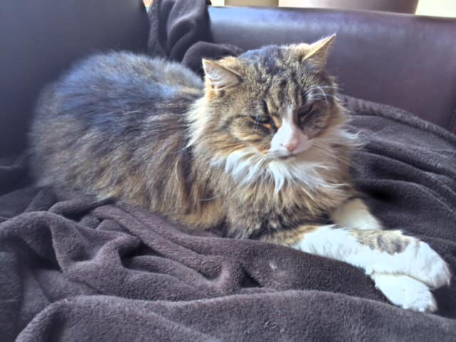
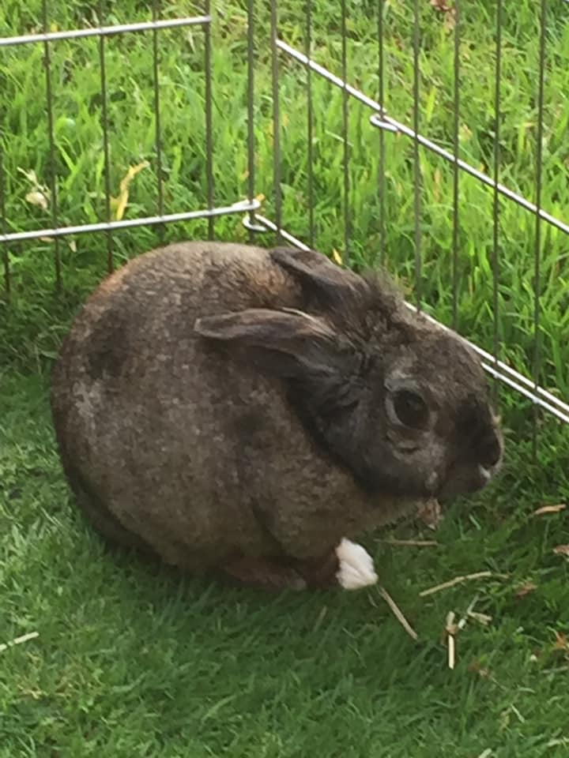
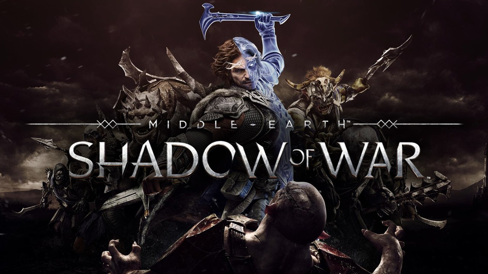
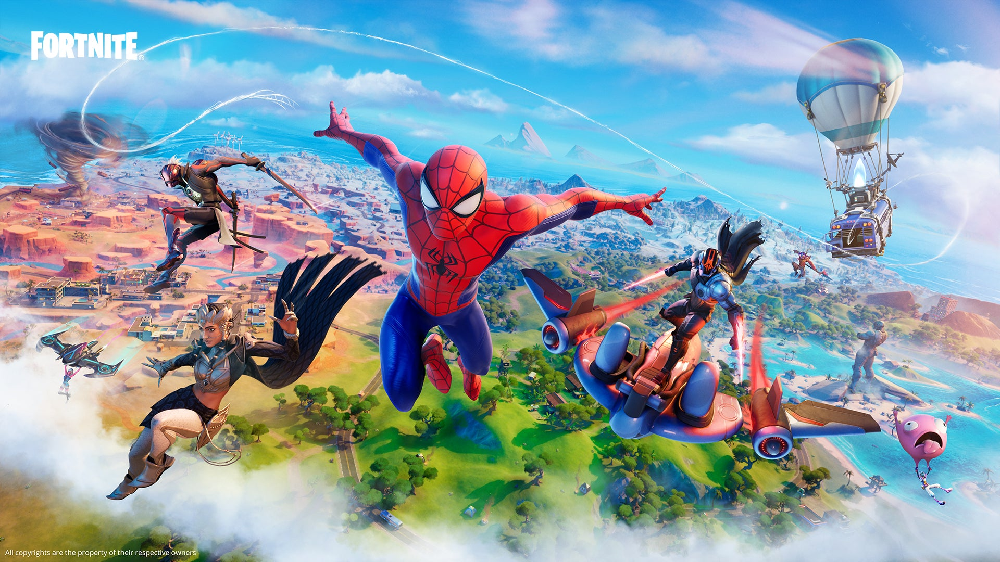
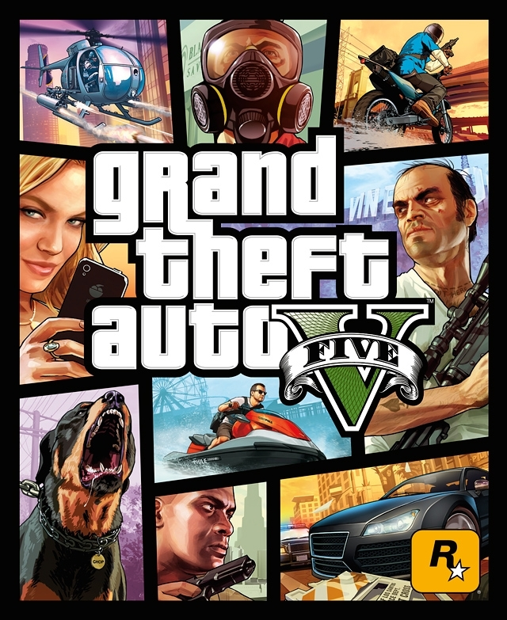

Some extra's
Buiten voetbal en chiro heb ik nog andere interresses en anekdotes natuurlijk.
Huisdieren
Kato
De kat die te zien is op de foto's toen ik baby was, heette Sam. Ze is overleden van ouderdom in 2009.
Na een jaar besloot mama dat ze toch een nieuwe kat wou, dus namen we Kato in huis.
Geboren in September 2010, telt ze nu dus al 11 jaar.


Kamiel
Kamiel het konijn is ondertussen al een jaar niet meer onder ons, maar toch vond ik dat ze erbij moest.
Ze is overleden in november 2020.
Een beter cadeau van Sinterklaas kon ik mij niet voorstellen.

Gaming
PS4
Ik game ook veel in mijn vrije tijd.
Het is een gemakkelijke manier om van thuis uit contact te houden met mijn vrienden.
Ik doe het ondertussen al 6 jaar en ik blijf er mijn plezier uit halen.
Hieronder enkele voorbeelden van games die ik vaak speel.


